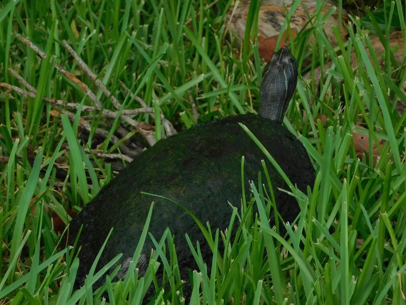

フロリダ半島固有の大型水棲ガメ。活発な泳ぎと鮮やかな頭部縞模様が特徴。成体は草食傾向が強く、日光浴も好む。大型水槽が必要な中級種だが管理は比較的シンプル。

1年後の甲長は12〜16cm程度。フロリダ半島の湖沼・川・運河に生きる草食傾向の強い水棲種で、日光浴を非常に好む。岩や倒木に複数個体が並んで甲羅干しする姿が観察される。成長とともに水草・藻類が主食になりやすく、植物食管理が飼育の中心になる。
10年後は甲長28〜35cm、重さ2〜5kg程度が多い。コウキバラガメと同様の大型化をするため、60〜90cm以上の水槽または屋外池への移行が視野に入る。15〜30年の寿命があり、成体の大型化と草食管理を最初から計画に含めることが重要。
ペニンシュラクーターは草食傾向が強く食事管理のシンプルさはあるが、成体は30〜35cmを超える場合があり飼育スペースの拡大が避けられない。「草食種だから省管理」という発想と、「大型化する水槽スペースが必要」という現実のギャップに後から気づくケースが報告されている。購入前から成体サイズと必要水槽サイズを確認し、屋外池移行の可能性も含めた計画を立てておくことが安定飼育につながりやすい。
フロリダ半島の湖沼・川・運河に広く生息。日光浴をとても好み、岩や倒木の上に並んで甲羅干しをする姿が観察される。成体は水草・藻類・水生植物を主食とする草食傾向が強い種です。
成体への給餌は小松菜・チンゲン菜・水草（アナカリス）が適切。配合飼料は補助として少量に留めます。
← 横にスクロールできます
| 種名 | 甲長 | 難易度 | 必要水槽 | 特徴 |
|---|---|---|---|---|
| ペニンシュラクーター このページ | 25〜37cm | 中級 | 90cm〜 | 本種・大型・草食 |
| カンバーランドスライダー | 18〜28cm | 入門 | 60〜90cm | やや小型・入門 |
| キバラガメ | 17〜27cm | 入門 | 60cm〜 | 入門・定番 |
| ミシシッピチズガメ | 8〜22cm | 中級 | 60cm〜 | 流水好み |
機材を揃える前に適性診断で確認。100種対応のツールで、あなたの生活環境に合う種も確認できます。